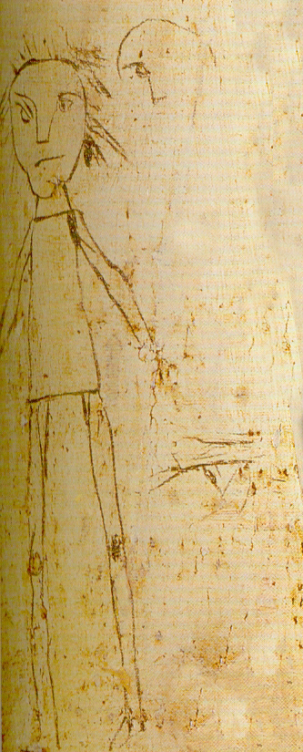
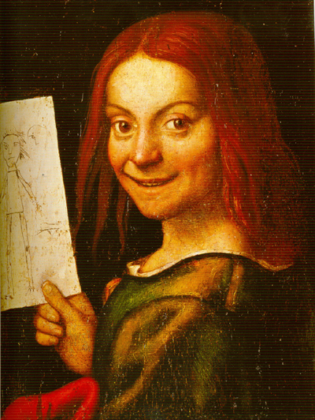

Jorge Furtado


Vez por outra, há pelo menos dois séculos, o assunto “mas isso é arte?” volta à praça, provocando debates tão acalorados que beiram a grosseria, furiosas estocadas verbais entre a turma do “meu filho de cinco anos pinta melhor que isso” e a turma do “vai estudar, ignorante!”.
Em 2009 foi a “Casa Monstro”, trabalho do artista paulista Henrique Oliveira na Bienal do Mercosul, sobre qual muito se disse e escreveu. (1) Agora a quizila se deu em torno da obra da artista brasileira Adriana Varejão, vendida em Londres por 1,105,250 libras (quase dois milhões de dólares). O que poderia ser orgulho nacional – uma jovem e talentosa artista brasileira bombando na Christie’s - foi o gatilho para críticas iradas, alguns sutis exegetas nacionais definiram a obra como “merda colorida” e “essa bosta” (2).
É bom lembrar que o trabalho de Adriana é um óleo sobre tela de 2 metros e meio de largura por 1 e 80 de altura e foi analisado por seus coprocríticos a partir de uma imagem de 12 por 10 centímetros, na tela de seus computadores (3). Participei do debate enquanto tive tempo e paciência e, a um comentarista que definiu arte como sendo “o que é belo, agradável aos olhos”, lembrei que a definição exclui não apenas a Guernica do Picasso e grande parcela da arte produzida desde o século XIX, mas também as gravuras de Goya sobre a guerra, e todas as representações do inferno, da morte e da dor, desde sempre.
Quando este assunto volta lembro do livro de E.H. Gombrich, “A história da arte”, excelente base de lançamento para quem quer explorar, aprender e se divertir no vasto universo das artes.
Citação:
“Na realidade, não penso que existam quaisquer razões erradas para se gostar de um quadro ou de uma escultura. (...) Há razões erradas para não se gostar de uma obra de arte. O antigo provérbio de que gostos não se discutem pode muito bem ser verdadeiro, mas não deve esconder o fato de que o gosto é suscetível de ser desenvolvido. (...) Nunca se acaba de aprender acerca da arte. Há sempre novas coisas a descobrir. As grandes obras de arte parecem ter um aspecto diferente cada vez que nos colocamos diante delas. Parecem ser tão inexauríveis e imprevisíveis quantos seres humanos de carne e osso. É um mundo excitante, com suas próprias e estranhas leis, e suas próprias aventuras. Ninguém deve pensar que sabe tudo a respeito, pois ninguém sabe. Talvez nada exista de mais importante do que isto: que para nos deleitarmos com essas obras devemos ter um espírito fresco, pronto a captar todo e qualquer indício sugestivo e a reagir a todas as harmonias ocultas; sobretudo, um espírito que não esteja atravancado de palavras bombásticas e frases feitas.”
Gombrich, mais adiante, lembra que é um erro comum imaginar que a função da arte seja sempre e tão somente representar a realidade visível:
“O camundongo Mickey não se parece muito com um rato verdadeiro; no entanto, as pessoas não escrevem cartas indignadas aos jornais sobre o comprimento do apêndice caudal de Mickey. Os que penetram no mundo encantado de Disney não estão preocupados com a Arte com A maiúsculo. Não vão para seus espetáculos armados dos mesmos preconceitos com que visitam uma exposição de pintura moderna. Mas se um artista moderno desenha alguma coisa à sua maneira, está sujeito a que o considerem um trapalhão, incapaz de fazer melhor do que isso. Ora, seja o que for que pensemos sobre artistas modernos, podemos seguramente creditá-los com suficientes conhecimentos para desenharem "corretamente". Se não o fazem, suas razões devem ser muito semelhantes às de Walt Disney. Devemos perguntar sempre se acharmos falhas na exatidão de um quadro (...) se o artista não teria suas razões para mudar a aparência daquilo que viu.”

Quem observa esta ilustração pode chegar a várias conclusões. É a representação de um ser humano. Pode ser um homem, o cabelo comprido e a roupa não deixam muito claro o gênero do personagem, especialmente se não sabemos a época e o local em que o desenho foi feito, mas as linhas duras do nariz e do queixo sugerem um homem. Talvez seja um menino, as proporções da cabeça e do corpo indicam uma criança. Pode ser um rascunho, no canto da gravura há um início de traço de rosto, com três riscos fazendo o nariz, o olho direito e a testa, como um ensaio para o desenho maior. Há também, no alto da metade inferior do desenho, à direita, um olho, de perfil. Nota-se, no rosto da figura, que o autor parecia experimentar a melhor maneira de desenhar os olhos, que estão mais de perfil do que a posição do rosto pede. A boca é feita com uma única linha, rápida, mas de grande expressividade e precisão.
A linha solta do desenho, levemente irregular e de traçado contínuo, sem hachuras, o esquematismo das formas - o corpo é feito com um trapezóide – e a ausência de pés, nos fazem imaginar três hipóteses.
A primeira é que se trata de uma pintura moderna, provavelmente do século 20 para cá, quando os artistas já estavam, faz tempo, livres da tarefa de representar fielmente a realidade (tarefa assumida pela fotografia e pelo cinema com emburrecedora eficiência). A precisão da linha contínua que forma as duas sobrancelhas e o nariz fazem pensar num autor adulto, ou numa criança que desenha muito bem.
Parênteses: até agora eu não mencionei detalhes fundamentais, sem o qual não se pode começar qualquer conversa séria sobre uma obra de arte: suas dimensão e suportes. Saber - e informar - que um quadro é um “óleo sobre tela com 180 por 250 cm” ou “um gravura em metal sobre papel com 25 por 40 cm” é o mínimo que se exige de quem deseja publicar um texto sobre qualquer obra. A data e o local da realização da obra e sua autoria, se conhecida, também devem ser informadas, mas são menos importantes que as dimensões e suportes. O adiamento é intenciomnal.
A segunda hipótese é que se trata de um rabisco feito por um adulto, por exemplo, durante uma reunião ou falando ao telefone (caneta bic sobre papel de agenda, 15x10 cm). O desenho, neste caso, não teria qualquer pretensão artística, não teria sido feito para ser mostrado a alguém e o fato de nós agora o observarmos com tamanha atenção é alguma artimanha do destino, que não fez o seu serviço, levar o rabisco para o lixo.
A terceira hipótese é que se trata de um desenho feito por uma criança, cuja imperícia e espírito livre ignoram regras anatômicas. Picasso – um mestre da técnica, autor de pinturas de grande realismo já aos 14 anos – dizia ter levado uma vida inteira para aprender a pintar como uma criança.
Pois nenhuma destas três hipóteses é verdadeira. Trata-se de um detalhe do quadro “Rapaz com um desenho”, óleo sobre madeira, 37 x 29 cm, de Giovanni Francesco Caroto (1480? – 1546, Verona, Itália). A pintura está no Museo di Castelvecchio, em Verona.

O formato do rosto e os cabelos sugerem que o desenho representado no papel é um auto-retrato.
Caroto - a visão da pintura inteira deixa claro - tinha um grande domínio da técnica, capaz de retratar, de forma realista, o rosto do menino que orgulhosamente expõe o seu desenho e, com precisão fotográfica, a folha de papel com rabiscos, na mão do menino.
O retrato do menino, feito por Caroto, não é especialmente interessante, desapareceria entre os milhares de retratos dos filhos da nobreza que hoje cobrem paredes sem fim das galerias dos museus da Europa. Especial é o retrato do retrato do menino. Esta pintura, segundo Norbert Schneider, é provavelmente a mais antiga representação infantil da realidade, “dando ao espectador a oportunidade de comparar a visão da criança com a do próprio artista”.
Observar atentamente uma obra de arte a ponto de perceber o esforço que há para se chegar ao simples, com o espírito desarmado, pronto para “reagir a todas as harmonias ocultas”, é um gesto que se aprende e se aperfeiçoa. E se o seu filho de cinco anos pinta melhor que o Picasso ou a Adriana Varejão, tire já esse menino do colégio.
X
(1) http://www.casacinepoa.com.br/o-blog/jorge-furtado/arte-ainda
(2) O post sobre o assunto foi um dos mais lidos da semana no blog do Nassif e teve quase 200 comentários:
http://www.advivo.com.br/blog/luisnassif/o-recorde-de-adriana-varejao
(3) O quadro de Adriana Varejão, “Parede com Incisões a la Fontana II”, pode ser visto em:
http://www.christies.com/LotFinder/lot_details.aspx?intObjectID=5408949
X
Atualizado em 01.04.11:
Grande notícia: Armindo Trevisan tem um blog. Criado por sua esposa Cleuza e sua neta Ingrid, o blog do Trevisan reúne alguns de seus extraordinários textos sobre arte, filosofia, poesia, música. Tive a sorte de ser seu aluno por dois anos e é sempre um prazer voltar a beber na fonte de sua sabedoria e generosidade. Descubra por você mesmo em:
http://armindotrevisan.blogspot.com/
Sobre o prazer estético e seu aprendizado, Trevisan lembra de um trecho de Gustavo Corção:
- Para muita gente que ouve música ou vê pinturas, o que vale é a escala convencional de valores. Não vêem, mas veneram a consagração, e até gostam de ver o que todo o mundo diz que é sublime para ter participação na festa da sublimidade, e poder dizer, em qualquer momento, que viu ou que ouviu. Ou então, os mais independentes, ou os menos socializados como hoje diríamos, vêem ou ouvem o agrado imediato, a evidência superficial da obra, partindo da falsíssima idéia de que, estando diante de um quadro estão diante de um quadro. Ora, pode perfeitamente acontecer que estejam fisicamente diante do quadro e esteticamente e, espiritualmente, a léguas de distância. A pintura, sob esse ponto de vista, foi a mais ultrajada das artes. Pelo fato de estar toda ela atualmente na tela, e instantaneamente oferecida, pareceu ao respeitável público que paga e mantém as instituições que ele tinha o direito de exigir uma evidência que lhe permitisse chegar ver e entender. Será preciso explicar-lhe que arte alguma é assim evidente como um esbarro físico, como um clarão ou uma queimadura. Ao contrário disso, o objeto de arte tem a obscuridade própria dos grandes segredos e exige leitura, aprofundamento, caminho andado para que a mente e o coração cheguem aonde já chegaram as pernas. (O Desconcerto do Mundo. Rio de Janeiro, Agir Editora, 1965. p. 229-230).
Texto completo em:
http://armindotrevisan.blogspot.com/2011/03/o-declinio-das-artes-visuais-i.html
x
Bibliografia:
Gombrich, E.H, A história da arte. Círculo do livro, São Paulo, 1972. Tradução de Álvaro Cabral.
Schneider, Norbert. A arte do retrato. Editora Taschen, 1997. Tradução de Teresa Curvelo.

{kind=link}
{kind=link}